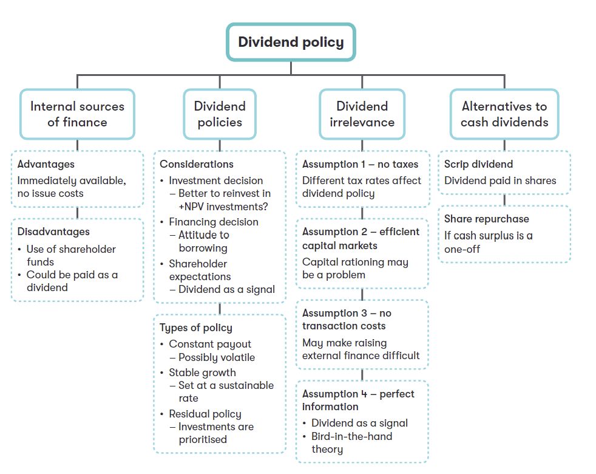

Chapter 10 Dividend Policy
Syllabus
E. Business Finance
1. Sources of, and raising, business finance
e) Identify and discuss internal sources of finance, including:^[2]^ i. retained earnings
increasing working capital management efficiency
the relationship between dividend policy and the financing decision
the theoretical approaches to, and the practical influences on, the dividend decision, including legal constraints, liquidity, shareholder expectations and alternatives to cash dividends.
1 Internal Source of Finance
The internal source of finance includes:
- The primary source of internal finance is retained earnings (cash).
- can also be generated by increasing working capital management efficiency.
1.1 Retained Earnings
Retained earnings in the statement of financial position may not be able to finance investment. Therefore, retained cash, rather than retained earnings, is the source of finance.
Advantages of using retained cash as a source of finance:
- Is flexible in terms of amount used or repayment patterns
- no dilution of control
- no issue costs
Disadvantages of using retained earnings:
- shareholder funds are an expensive source of finance
- shareholders may be sensitive to the dividend payments that will result from retention of reinvestment
- there is an opportunity cost in that if dividends were paid, the cash received could be invested by shareholders to earn a return.
The three key decisions in financial management – investing, financing and dividend policy – are interrelated:
- an increase in dividends (the dividend decision), will reduce the level of retained cash available and increase the need for external finance (the financing decision) to fund investment project (the investment decision).
- An increase in asset expenditure (the investment decision), would also increase the need for finance (the financing decision) which may be sourced internally by reducing dividends (the dividend decision).
Therefore, the company must decide whether to pay a dividend or retain earnings.
1.2 Improved Working Capital Management
a company’s ability to generate internal finance depends on generating operating cash flow exceeding interest and taxes.
Potential internal finance available = operating cash flow − interest – tax
Operating cash flows are calculated as follows:
Operating profit before depreciation and amortization x
Rise/fall in inventory (x)/x
Rise/fall in receivables (x)/x
Rise/fall in payables (x)/x
Operating cash flow (x)/x
Improved working capital management can help to release more internal equity finance. Potential areas for improvement include:
- Reducing the time taken to receive payments from customers (e.g. offering discounts for quick payment or outsourcing debt collection to a factor).
- Reducing inventory (e.g. through improved supply chain management or even moving to Just-in-Time (JIT) production).
- Taking increased credit from suppliers.
2 Dividend Policy
2.1 Dividend Theories
1. The Dividend Valuation Model
The dividend valuation model states that the value of a company’s shares depends on the expected future dividends. The formula for DVM is:
P0 = D0(1+g) / (ke-g)
Where:
- P0: the ex-div share price at time 0
- D0: the time 0 dividend;
- Ke: the rate of return of equity
- g: the future growth rate from current time onwards
The formula can also be rewritten as:
P0 = D1 / (ke – g)
Where:
- D1 is the Time 1 dividend
- g is the future growth rate from Time 1 onwards.
2. The Gordon Growth Model
If all earnings were distributed as dividend the company has no additional capital to invest, can acquire no more assets and cannot make higher profits.
The dividend growth rate g is given by:
g = bR
- b: the proportion of earnings retained; (1-b) is the proportion of earnings paid as a dividend
- R: the rate that profits are earned on new investment
If earnings at time 1 are E1, then the DVM can become:
P0 = D1/(ke-g) = E1(1 – b)/(Ke– bR)
If the dividend policy is represented by b and 1-b, the formula predicts that the share price will change if b changes and other things remain unchanged.
3. Dividend Irrelevance Theory
Modigliani and Miller argue that shareholders are indifferent to dividend policy under certain conditions.
- If a company pays no dividend, the share price should rise due to reinvestment of retained earnings.
- shareholders can manufacture dividends by selling shares which will have risen in value because of the investments. The increase in the value of shares can compensates for the loss of dividend.
Under this theory, the dividends pattern is irrelevant to shareholder wealth.
However, Modigliani and Miller made a series of assumptions which may not hold in practice:
- dividends and capital gains are taxed at the same rate
- no transaction cost (investors can sell shares to create a home-made dividend without incurring any trading costs)
- perfect markets (if the company defers dividend payments, the current share price will fully reflect its value).
Note: this equilibrium is reached only if the amounts retained are reinvested at the cost of equity.
Example 1
earnings are all paid as dividend
Current EPS = $0.8 per share (all paid out as dividend); Ke =20%
the price per share would be: P0 = 0.8/0.2 = $4
assumes from Time 1 onwards, half the earnings were paid out as dividend and half retained. what would happen to the share price?
1)earnings are reinvested at the cost of equity and assumes R = 0.2
So, no change in the share value, and so the dividends are irrelevant.
2)earnings are reinvested at more than the cost of equity and assumes R = 0.3
In this case, the share price rises because the extra earnings retained have been invested in a particularly valuable way.
3)earnings are reinvested at less than the cost of equity and assumes R = 0.1
In summary:
- If the company retains earnings and uses those to ‘do more of the same’ then the share price should not be affected.
- If the company retains earnings and uses those to produce higher returns than demanded by investors then dividends should be cut as that will increase shareholder value.
- If the company retains earnings and uses those to produce lower returns than demanded by investors then dividends should be increased to avoid the share price falling. If the company can think of no-good use for its earnings, it should distribute them to shareholders who can then decide for themselves what to do with them.
4. Bird-in-hand Theory
The bird-in-hand theory argues that shareholders prefer higher dividends (and therefore lower potential capital gains) because a cash dividend is without risk, whereas future share price growth is uncertain.
5. Clientele Theory
The company’s historical dividend policy may have attracted investors with specific needs (e.g. for current income or their tax situation). An abrupt change in dividend policy will disturb investor’s portfolios and investors will have to adjust their mix of shares. Therefore, the company should maintain a stable dividend policy or losing major investors.
2.2 Practical Considerations
Practical factors have a significant influence on the company’s dividend policy.
- Legal constraints
In most countries, a dividend can only be paid if there is a credit balance in the retained earnings account in the statement of financial position. No distributable reserves means no dividends.
- Company liquidity requirements
Companies have to maintain adequate liquidity. Dividend restrictions may be imposed to stay solvent or meet statutory capital maintenance requirements.
- Shareholder expectation
Most shares in quoted companies are held by influential institutional investors. A large dividend in current year may create expectations of the same or even higher in future. If these expectations are not met, key investors may sell their shares. So the company has to manage investor expectation of dividends.
- Signaling
There always exists information asymmetry between investors and the company. In a semi-strong form of the efficient market, public announcement of the level of dividends are signals of company’s strength or weakness, and share price will react to the announcement of a dividend.
- Usually, a dividend cut may be treated by investors as a negative signaling that the future prospects of the company are weak;
- an increase in dividend may be treated by shareholders as a positive signal of growing prospects of the company.
This means that it is better for a company to follow a consistent dividend policy.
- Borrowing covenants
A loan agreement may include clauses that limits dividend payments, for example a specified proportion of earnings. If less cash is paid as dividends, liquidity might be better.
2.3 Dividend Payment Policies
- Constant dividend
in this approach dividends are predictable but shareholders might be dissatisfied if they receive relatively low dividends if earnings are rising.
- Constant growth
Constant growth is predictable and attractive to shareholders. However, the dividend growth rate might not match earnings growth rate.
- Constant payout ratio
A constant payout ratio means paying a dividend that is a fixed proportion of earnings. This can create a variable number of dividends and is rarely adopted.
- Dividends as residuals
retained earnings fund all positive NPV projects, any remaining earnings not needed to support such projects are paid out as a dividend.
- Zero dividend
A high-growth company may find that, in the early years, all surplus cash can be profitably reinvested back into the business, particularly if the company lacks access to external finance.
Example 2
S company is a listed company on the stock market and 40% of shares are in the hands of public investors. The company’s profit growth and dividend policy are set out below. Will a continuation of the same dividend policy as in the past be suitable now?
Year 4 3 2 1 Current year
Profits ($’000) 176 200 240 290 444
Dividends ($’000) 88 104 120 150 222 (proposed)
Shares in issue 800,000 800,000 1,000,000 1,000,000 1,500,000
3 Alternatives to Cash Dividends
3.1 Scrip Dividends
A scrip dividend is a choice between a cash dividend and shares instead of cash. The number of shares received is linked to the dividends and the market price of the shares so that roughly equivalent value is received.
To attract the investors to choose shares, the value of shares offered is much greater than the cash alternative.
Advantages of scrip dividend
- It allows investors to acquire new shares without transaction costs and the company can conserve its cash for reinvestment.
- In some countries investors can obtain beneficial tax effect.
Disadvantages of dividend
- If the dividend per share is maintained or increased, the future total cash paid as a dividend will increase
- Due to an increase in supply of shares, the share price may fall
- May be seen as a negative signal by the market i.e. the company is experiencing cash flow issues.
3.3 Special Dividends
A larger-than-expected dividend may raise market expectations that future dividends will also be higher. So, a larger dividend may be announced as a special dividend- a bonus dividend to avoid creating expectations of an unsustainable level. Any exceptional cash surplus will be returned in this way but that this should not be built into dividend per share forecast.
4 Summary
4.1 Overview

4.2 Technical Articles
Related technical articles: